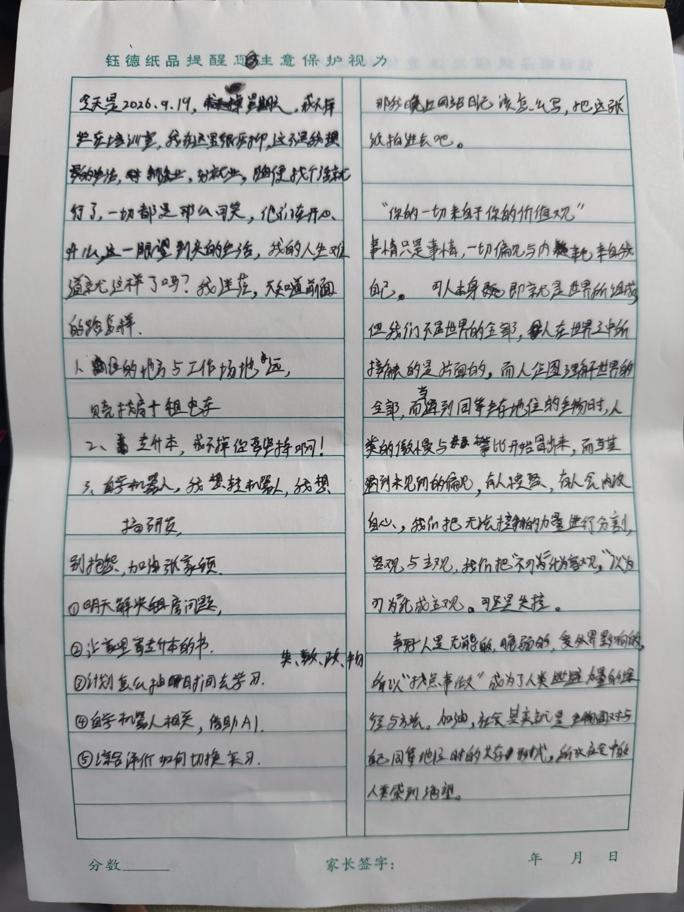
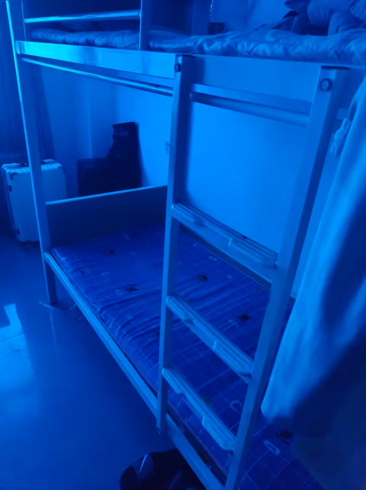

入职培训，加油。
2026.9.19
今天培训没有手机，很煎熬，虽然没那么累，但我仍然不适应。看图吧，中间休息拿到手机时期望有人消息，可现实并没有。想哭，我只有自己，戒不掉。 lsh走了 伤心 lsh你别走


· 完 ·
写于 2026.09.19 19:58
2026.9.19
今天培训没有手机，很煎熬，虽然没那么累，但我仍然不适应。看图吧，中间休息拿到手机时期望有人消息，可现实并没有。想哭，我只有自己，戒不掉。 lsh走了 伤心 lsh你别走


· 完 ·
写于 2026.09.19 19:58